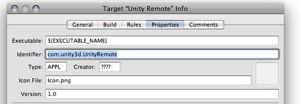

Unity Remote 3 (DEPRECATED)
Unity Remote 3 (further refered to as Unity Remote) is an application that allows you to use your iOS device as a remote control for your project in Unity. This is useful during development since it is much quicker to test your project in the editor with remote control than to build and deploy it to the device after each change.
DEPRECATED
This is an old page, relating to an old version of Unity Remote. Please use the current version of Unity Remote.
Where can I find Unity Remote?
Unity remote is available for download from the AppStore at no charge. If you prefer to build and deploy the application yourself, you can download the source from the Unity Learn section at the Unity website.
How do I build Unity Remote?
First, download the project source code here and unzip it to your preferred location. The zip file contains an XCode project to build Unity Remote and install it on your device.
Assuming you have already created the provisioning profile and successfully installed iOS builds on your device, you just need to open the Xcode project file UnityRemote.xcodeproj. Once XCode is launched, you should click "Build and Go" to install the app on your iOS device. If you have never built and run applications before, we recommend that you try building some of the Apple examples first to familiarize yourself with XCode and iOS.
Once Unity Remote is installed, make sure your device is connected via Wi-Fi to the same network as your development machine or else connected to the machine directly via USB. Launch Unity Remote on your iPhone/iPad while Unity is running on your computer and select your computer from the list that appears. Now, whenever you enter Play mode in the Editor, your device will act as a remote control that you can use for developing and testing your game. You can control the application with the device wirelessly and you will also see a low-res version of the app on the device's screen.
Note: The Unity iOS editor cannot emulate the device's hardware perfectly, so you may not get the exact behavior (graphics performance, touch responsiveness, sounds playback, etc) that you would on a real device.
Xcode shows strange errors while deploying Unity Remote to my device. What should I do?
This indicates that the default Identifier in the Unity Remote project is not compatible with your provisioning profile. You will have to alter this Identifier manually in your XCode project. The Identifier must match your provisioning profile.
You will need to create an AppID with an trailing asterisk if you have not already done so; you can do this in the Program Portal on Apple's iPhone Developer Program. First, go to the Program Portal and choose the AppIDs tab. Then, click the Add ID button in the top right corner and type your usual bundle identifier followed by dot and asterisk (eg, com.mycompany.*) in the App ID Bundle Seed ID and Bundle Identifier field. Add the new AppID to your provisioning profile, then download and reinstall it. Don't forget to restart Xcode afterwards. If you have any problems creating the AppID, consult the Provisioning How-to section on Apple's website.

Open the Unity Remote project with XCode. From the menu, select Project->Edit Active Target "Unity Remote". This will open a new window entitled Target "Unity Remote" Info. Select the Properties tab. Change the Identifier property field from com.unity3d.UnityRemote to the bundle identifier in your AppID followed by "." (dot) followed by "UnityRemote". For example, if your provisioning profile contains ######.com.mycompany.* AppID, then change the Identifier field to com.mycompany.UnityRemote.
Next, select Build->Clean all targets from the menu, and compile and install Unity Remote again. You may also need to change the active SDK from Simulator to Device - 2.0 | Release. There is no problem using SDK 2.0 even if your device runs a newer version of the OS.
I'm getting really poor graphics quality when running my game in Unity Remote. What can I do to improve it?
When you use Unity Remote, the game actually runs on your Mac while its visual content is heavily compressed and streamed to the device. As a result, what you see on the device screen is just a low-res version of what the app would really look like. You should check how the game runs on the device occasionally by building and deploying the app (select File->Build & Run in the Unity editor).
Unity Remote is laggy. Can I improve it?
The performance of Unity Remote depends heavily on the speed of the Wi-Fi network, the quality of the networking hardware and other factors. For the best experience, create an ad-hoc network between your Mac and iOS device. Click the Airport icon on your Mac and choose "Create Network". Then, enter a name and password and click OK. On the device, choose Settings->Wi-Fi and select the new Wi-Fi network you have just created. Remember that an ad-hoc network is really a wireless connection that does not involve a wireless access point. Therefore, you will usually not have internet access while using ad-hoc networking.
Turning Bluetooth off on both on your iPhone/iPad and on Mac should also improve connection quality.
If you do not need to see the game view on the device, you can turn image synchronization off in the Remote machine list. This will reduce the network traffic needed for the Remote to work.
The connection to Unity Remote is easily lost
This can be due to a problem with the installation or other factors that prevent Unity Remote from functioning properly. Try the following steps in sequence, checking if the performance improves at each step before moving on to the next:-
- First of all, check if Bluetooth is switched on. Both your Mac and iOS device should have Bluetooth disabled for best performance.
- Delete the settings file located at
~/Library/Preferences/com.unity3d.UnityEditoriPhone.plist - Reinstall the game on your iPhone/iPad.
- Reinstall Unity on your Mac.
- As a last resort, performing a hard reset on the iOS device can sometimes improve the performance of Unity Remote.
If you still experience problems then try installing Unity Remote on another device (in another location if possible) and see if it gives you better results. There could be problems with RF interference or other software influencing the performance of the wireless adapter on your Mac or iOS device.
Unity Remote doesn't see my Mac. What should I do?
- Check if Unity Remote and your Mac are connected to the same wireless network.
- Check your firewall settings, router security settings, and any other hardware/software that may filter packets on your network.
- Leave Unity Remote running, switch off your Mac's Airport for a minute or two, and switch on again.
- Restart both Unity and Unity Remote. Sometimes you also need to cold-restart your iPhone/iPad (hold down the menu and power buttons simultaneously).
- Unity Remote uses the Apple Bonjour service, so check that your Mac has it switched on.
- Reinstall Unity Remote from the latest Unity iOS package.